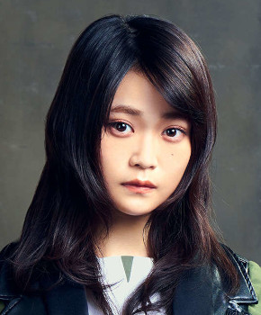

サカミチ
サカミチ石森虹花いしもりにじか

黒い羊（2019年）・最新
欅坂46 1期生 ・ 卒業・活動終了
センター曲：0曲（シングル表題曲センター：0曲） フォーメーション/歌唱参加：27曲
ライブ記録：センター 0公演・出演記録のある公演 65公演
ブログ記事：674件
学年：1997年度（同級生 全17人を見る）
フォーメーション統計：登場 22曲・フロント（1列目）4曲
よく隣になるメンバー：米谷奈々未（9回）、土生瑞穂（8回）、佐藤詩織（7回）
推しに登録すると、トップページに「推しの新着」（最新のブログ）が出ます。
歴代アー写など（11枚）
タップすると上の写真が切り替わります。上の写真をタップすると最新のアー写に戻ります。